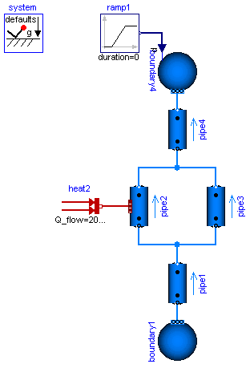
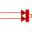

BranchingDynamicPipesMulti-way connections of pipes with dynamic momentum balance, pressure wave and flow reversal |
|
Diagram
{kind=link}
Information
This information is part of the Modelica Standard Library maintained by the Modelica Association.
This model demonstrates the use of distributed pipe models with dynamic energy, mass and momentum balances. At time=2s the pressure of boundary4 jumps, which causes a pressure wave and flow reversal.
Change system.momentumDynamics on the Assumptions tab of the system object from SteadyStateInitial to SteadyState, in order to assume a steady-state momentum balance. This is the default for all models of the library.
Change the Medium from MoistAir to StandardWater, in order to investigate a medium with significantly different density. Note the static head caused by the elevation of the pipes.
Note the appropriate use of the modelStructure of the DynamicPipe models (Advanced tab). The default modelStructure is av_vb, i.e. volumes with a pressure state are exposed at both ports. In many cases this gives good numerical performance, avoiding algebraic loops in connections, e.g. if a pipe is connected to a valve or to a vessel with portsData configured. The price to pay is a high-index DAE if two pipes are connected or if a pipe is connected to a boundary with prescribed pressure. In such cases one might consider changing the modelStructure.
In the BranchingDynamicPipes example, {pipe1,pipe3,pipe4}.modelStructure are configured to a_v_b, while pipe2.modelStructure remains av_vb. This avoids a high-index DAE and overdetermined initial conditions.
Components (9)
| system |
Type: System |
|
|---|---|---|
| boundary1 |
Type: Boundary_pT |
|
| pipe1 |
Type: DynamicPipe |
|
| pipe2 |
Type: DynamicPipe |
|
| pipe3 |
Type: DynamicPipe |
|
| pipe4 |
Type: DynamicPipe |
|
| boundary4 |
Type: Boundary_pT |
|
| ramp1 |
Type: Ramp |
|
|  | heat2 |